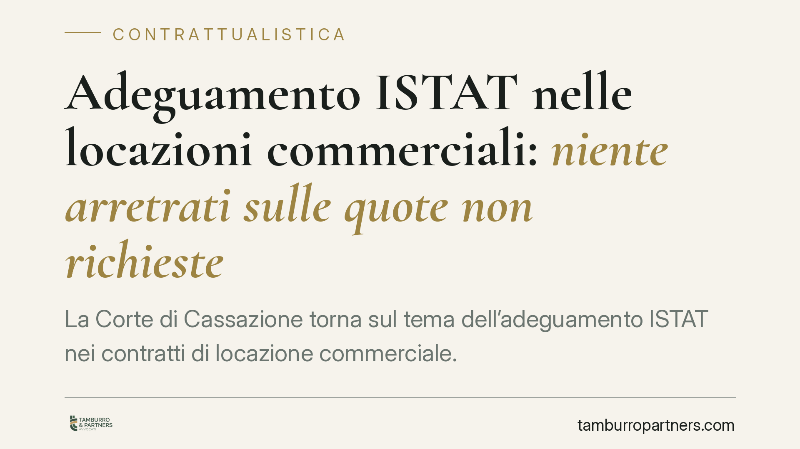

Adeguamento ISTAT nelle locazioni commerciali: niente arretrati sulle quote non richieste
La Corte di Cassazione torna sul tema dell'adeguamento ISTAT nei contratti di locazione commerciale. Il principio è netto: l'aggiornamento del canone non opera in automatico, richiede una richiesta scritta del locatore e non può essere preteso per gli anni passati. Le clausole di aumento automatico restano nulle. Una distinzione che incide su crediti, morosità e contenzioso.

Il principio affermato
L'adeguamento ISTAT del canone di locazione commerciale non ha effetto retroattivo. La Cassazione ribadisce che il locatore non può richiedere in un'unica soluzione gli importi maturati negli anni precedenti se non li aveva mai domandati al conduttore.
In altre parole: se per cinque anni il proprietario ha incassato il canone base senza mai attivarsi per l'aggiornamento, non può pretendere a posteriori il cumulo delle quote ISTAT non richieste. Il diritto all'adeguamento esiste, ma va esercitato in modo tempestivo e formale.
Inquadramento normativo
Il riferimento è l'art. 32 della Legge 392/1978 (la cosiddetta legge sull'equo canone), che disciplina l'aggiornamento del canone nelle locazioni di immobili a uso diverso dall'abitazione. La norma consente l'adeguamento in misura non superiore al 75% della variazione ISTAT dei prezzi al consumo, ma subordina tale facoltà a una richiesta del locatore: l'aumento non scatta da solo.
Il punto decisivo è il collegamento con l'art. 79 della stessa legge, che sanziona con la nullità ogni pattuizione diretta a far conseguire al locatore un canone superiore a quello legalmente dovuto. Le clausole contrattuali che prevedono un adeguamento ISTAT automatico - cioè senza alcuna attivazione del locatore - rientrano in questa previsione e sono nulle.
Resta fermo che, per i contratti di c.d. "grandi locazioni" introdotti dal D.L. 133/2014 (immobili con canone annuo superiore a 250.000 euro), le parti godono di maggiore autonomia e possono derogare ad alcune tutele. Fuori da questa ipotesi, la regola generale è quella descritta.
Perché la richiesta scritta è centrale
La richiesta di adeguamento ha natura costitutiva: produce i suoi effetti dal momento in cui perviene al conduttore, non prima. Da quel momento il canone si intende aggiornato per il futuro.
Ne deriva che il locatore inerte non accumula un credito "nascosto". Le quote ISTAT non domandate non maturano come arretrato esigibile. Questo evita che il conduttore si trovi, a distanza di anni, di fronte a una richiesta di pagamento gonfiata da adeguamenti mai formalizzati.
Implicazioni pratiche
Per il locatore il messaggio è chiaro: l'adeguamento va richiesto per iscritto, anno per anno o comunque in modo tracciabile, con un documento idoneo a provare la data di ricezione. L'inerzia non è recuperabile a posteriori.
Per il conduttore commerciale si rafforza una tutela importante. Di fronte a una richiesta cumulativa di arretrati ISTAT mai domandati in precedenza, può opporre la natura non retroattiva dell'adeguamento. Allo stesso modo, può contestare le clausole di aumento automatico inserite nel contratto, facendone valere la nullità.
Il tema ha ricadute anche in sede di risoluzione per morosità: il mancato pagamento di quote ISTAT non correttamente richieste non costituisce inadempimento e non legittima lo sfratto. La distinzione tra importi effettivamente dovuti e pretese infondate può incidere sulla gravità della morosità contestata.
Cosa fare in concreto
- Locatori: formalizzate ogni richiesta di adeguamento ISTAT con comunicazione scritta tracciabile (PEC o raccomandata), conservando prova della ricezione.
- Locatori: verificate la periodicità delle richieste; non confidate su clausole di automatismo, che possono risultare nulle.
- Conduttori: esaminate il contratto per individuare eventuali clausole di aumento automatico e valutatene la validità.
- Conduttori: di fronte a richieste di arretrati ISTAT cumulativi, chiedete al locatore la documentazione delle richieste pregresse prima di pagare.
- Entrambe le parti: in caso di contenzioso o trattativa di rinegoziazione, fate ricostruire con precisione il canone effettivamente dovuto anno per anno.
La materia richiede un'analisi puntuale del singolo contratto e della corrispondenza intercorsa tra le parti. Consigliamo di sottoporre a verifica preventiva sia i testi contrattuali sia le prassi di richiesta, per evitare che diritti esistenti si perdano per inerzia o che pretese non dovute generino inutile contenzioso.
---
*Contributo informativo a cura di Tamburro & Partners - Avv. Giuseppe Tamburro. Non costituisce parere legale.*
Ogni contratto ha il suo equilibrio.
Se vuoi una revisione delle clausole o una redazione su misura, scrivi allo studio. Ti rispondiamo entro un giorno lavorativo.